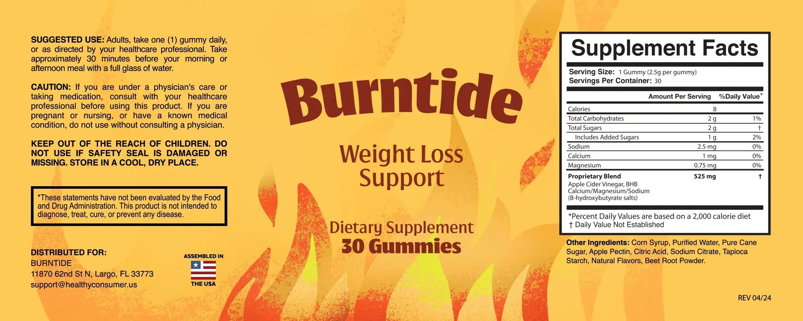

Ingredients
The Burntide Ingredients: Vinegar And Three BHB Salts In One 525 mg Blend
The jar label lists one proprietary blend of 525 mg, with no split between its parts. The research notes below are general background, not a test of this gummy.*

| Burntide Supplement Facts, as printed | Amount |
|---|---|
| Serving size | 1 gummy (2.5 g) |
| Servings per container | 30 gummies |
| Calories | 8 |
| Total carbohydrates | 2 g (1% DV) |
| Total sugars | 2 g, includes 1 g added sugars (2% DV) |
| Sodium | 2.5 mg (0% DV) |
| Calcium | 1 mg (0% DV) |
| Magnesium | 0.75 mg (0% DV) |
| Proprietary blend | 525 mg: apple cider vinegar and BHB (beta-hydroxybutyrate) calcium, magnesium and sodium salts |
| Other ingredients | Corn syrup, purified water, pure cane sugar, apple pectin, citric acid, sodium citrate, tapioca starch, natural flavors, beet root powder |
How to read it: the blend lists two ingredients, but gives one total, 525 mg, and no split between the vinegar and the three ketone salts. The gummy weighs 2.5 g, so the blend is about a fifth of it.
Directions (label): adults take one gummy daily, or as directed by a healthcare professional, about 30 minutes before a morning or afternoon meal with a full glass of water. Store in a cool, dry place and keep out of reach of children.
At A Glance
| Ingredient | Amount | Worth knowing |
|---|---|---|
| Apple cider vinegar | Part of 525 mg | Small trials; teeth and diabetes cautions. |
| Calcium, magnesium, sodium BHB | Part of 525 mg | Ketone-salt research uses grams. |
| Minerals on the panel | 1 mg Ca, 0.75 mg Mg, 2.5 mg Na | Trace amounts. |
| Sugars | 2 g, 1 g added | Matters with diabetes. |
| Corn syrup, cane sugar | Base | The gummy is not sugar-free. |
| Beet root powder, pectin | Color and gel | Pectin is plant-based. |
See also: Diabetes and ketones · Minerals, sodium, kidneys
The Honest Maths
The gummy weighs 2.5 g, and the blend is 525 mg of it, shared between vinegar and three ketone salts. Ketone-salt studies use several grams, so the blend cannot match them. See why 525 mg is small.
See also: Minerals, sodium, kidneys · Label Line By Line
General research strength.
The label by type.
*These statements have not been evaluated by the Food and Drug Administration. This product is not intended to diagnose, treat, cure or prevent any disease. Results vary from person to person.